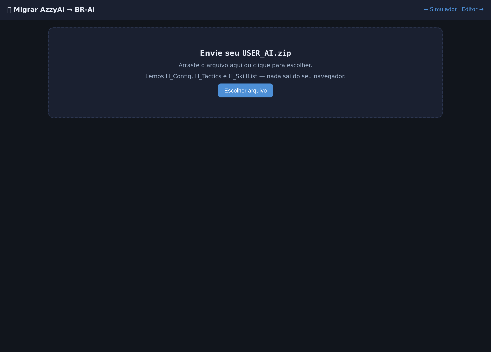
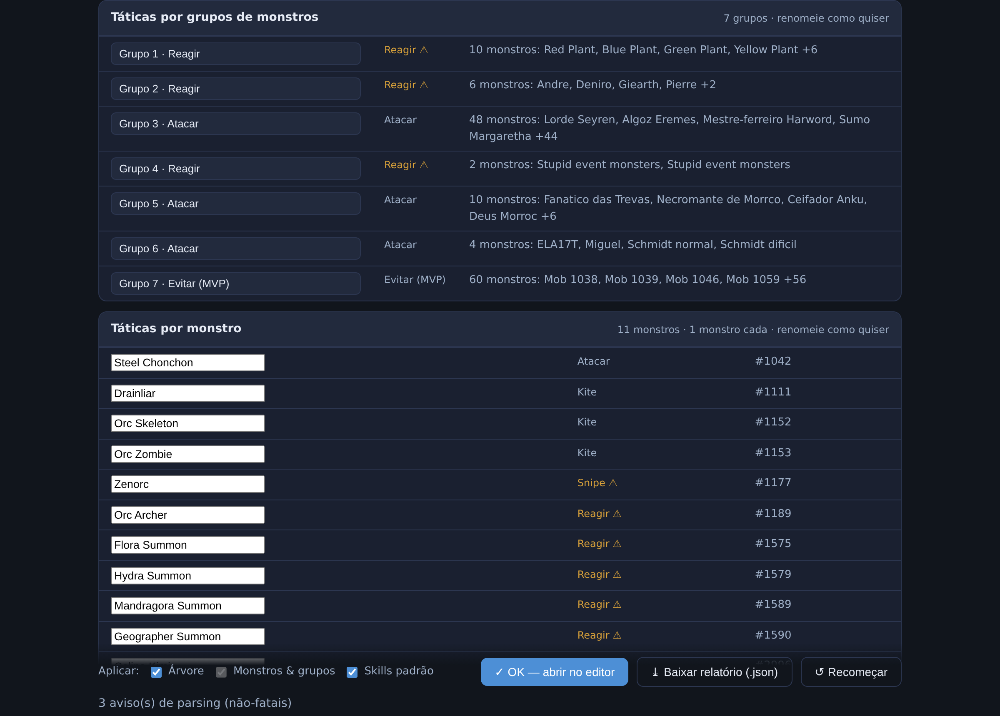
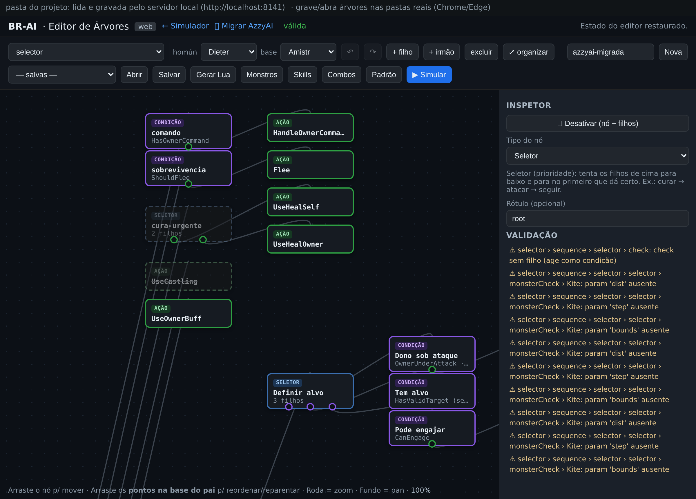

Migrar uma AzzyAI → BR-AI
Já usa a AzzyAI? Você pode trazer a sua configuração para o BR-AI em segundos: envie o seu USER_AI.zip, confira o de→para na tela e clique em OK — a árvore já abre montada no editor, pronta para refinar e gerar o Lua.
A ideia
A AzzyAI tem um motor fixo (igual para todo mundo) e a sua configuração por cima dele: HP de agressão, cura do dono, quais skills cada homúnculo usa e como reagir a cada monstro. O BR-AI já reimplementa esse motor como uma árvore de comportamento — então migrar não é reescrever a IA, é pegar a árvore padrão do BR-AI e aplicar a sua configuração: os ajustes (knobs), as skills padrão de cada papel e as táticas por monstro.
A leitura do USER_AI.zip e a conversão acontecem na própria página — nada é enviado para nenhum servidor. Funciona offline.
Passo a passo
- Abra “🧬 Migrar AzzyAI” no topo do Simulador ou do Editor.
- Envie o seu
USER_AI.zip— arraste para a área ou clique para escolher. É a pasta inteira da sua IA, compactada. - Aguarde o indicador de carregamento (“Lendo o arquivo…” → “Convertendo a IA…”) — ele some sozinho quando o de→para aparece.
- Confira o de→para. Ajuste o homúnculo e, se for um Homunculus S, a forma base; renomeie os grupos de monstro como preferir.
- Marque o que aplicar e clique em “OK — abrir no editor”. Por padrão vai tudo (árvore + monstros + skills); dá para migrar só parte. A árvore migrada abre montada no editor.

USER_AI.zip — arrastando ou clicando. A página detecta os arquivos lidos (H_Config, H_Tactics, H_SkillList…).

Na tela de revisão
Três controles deixam a migração do seu jeito antes de abrir no editor:
- Indicador de carregamento. Ao escolher o zip, um spinner aparece na hora (“Lendo o arquivo…” → “Convertendo a IA…”), então você sabe que está processando — mesmo com muitas táticas.
- Homúnculo + forma base. O seletor de homúnculo define as skills. Para um Homunculus S (Eira/Bayeri/Sera/Dieter/Eleanor) habilita-se o seletor de forma base (Lif/Amistr/Filir/Vanilmirth) — igual às telas do editor e do simulador —, que define de qual base o S herda skills. Vem pré-selecionado pelo
OldHomunTypeda sua config; trocar qualquer um recalcula o de→para na hora. - Renomear grupos. O painel “Táticas por monstro” mostra cada grupo com um campo de nome editável, o comportamento (atacar, kite, snipe, reagir…) e os monstros ao lado; um ⚠ marca os comportamentos de encaixe aproximado, para você revisar. O nome novo vai tanto para o catálogo (
monsters.json) quanto para o rótulo do nómonsterCheck, então a árvore já abre no editor com os nomes que você escolheu. As renomeações são preservadas mesmo se você trocar o homúnculo/base. - Migrar só uma parte. Perto do botão OK há três caixas — Árvore (comportamento + ajustes + táticas), Monstros & grupos e Skills padrão — e você aplica só o que marcar. Ex.: traga os monstros e as skills da AzzyAI sem mexer na árvore que você já tem (desmarque “Árvore”). Marcar “Árvore” inclui os grupos automaticamente, pois os nós de tática dependem deles.
O que é migrado
- Ajustes (H_Config) → as configurações do BR-AI:
AggroHP,HealOwnerHP,AutoMobCount,CastleDefendThreshold,AutoComboSpheres,FollowStayBacke muitos outros. FlagsUse…=0desativam o ramo correspondente da árvore (ex.:UseAutoHeal=0apaga o ramo de cura). Esses ajustes vão para oconfig.luado pacote (Gerar Lua) e valem no simulador; reveja/edite no painel Config do editor. - Skills padrão por papel → para cada tipo de homúnculo, as 4 skills de Main, Dano AoE, Buff Ofensivo e Buff Defensivo, com o nível de cada uma. Ex.: Dieter com Blast Forge no AoE e Tempering no buff ofensivo.
- Táticas por monstro (H_Tactics) → monstros com a mesma configuração viram um grupo (“Grupo 1”, “Grupo 2”…), e cada grupo vira um nó “checagem de monstro” na árvore com o comportamento traduzido (atacar, kite, snipe, reagir, ignorar). A lista de evitar (H_Avoid) sempre vira um grupo de MVPs — que alimenta a detecção de chefe (
config.BossGroup) —, mas o ramo de fuga só é montado quandoUseAvoid≠0(comUseAvoid=0, igual à AzzyAI, o homúnculo não foge). - Comportamentos prontos ligados por ajuste → alguns nós que já existem na árvore são ativados conforme a sua config, sem você montar nada: kite global (
KiteMonsters/ForceKite, com distância e passo deKiteBounds/KiteStep), ataque dançante (UseDanceAttack, respeitandoDanceMinSP) e a trava de estilo da Eleanor (EleanorDoNotSwitchModemantém o estilo fixo, sem Style Change). O nível da invocação da Sera (SeraCallLegionLevel) vai para a tela Skills. - Proteção do dono e estratégia de mira → resgate do dono (
RescueOwnerLowHP: o homúnculo corre para o lado do dono quando o HP dele cai abaixo do limite), buff defensivo no dono cercado (DefensiveBuffOwnerMobbed), mira oportunista (OpportunisticTargetingtroca para um alvo melhor se aparecer) e só skill (UseSkillOnlydesliga o ataque normal — o homúnculo só usa habilidades). - Perambular, movimento e AoE → perambular ocioso (
UseIdleWalk/IdleWalkSP/IdleWalkDistance: anda perto do dono quando não há nada a fazer), movimento «sticky» (MoveSticky/MoveStickyFight: gruda mais no lugar e não volta ao dono no meio da luta), ajuste de AoE (AutoMobModeliga/desliga a AoE automática,AoEFixedLevelfixa o nível,AoEMaximizeTargetsmira no aglomerado) e a skill principal em perseguição/ataque (UseHomunSSkillChase/UseHomunSSkillAttack).
A base de skills do BR-AI (alcance, SP, tempo de cast, área) é mais atual que qualquer AzzyAI e permanece como está. Da AzzyAI lemos apenas qual skill é a padrão de cada papel e em que nível — nada dos metadados.
O que não é migrado (e por quê)
- Lista de amigos / PVP (A_Friends): o BR-AI ainda não tem sistema de amigos. As entradas são contadas e relatadas para você não perder a informação.
- Comportamentos marcados ⚠: alguns campos de tática (como “ignorar” e “reagir”) ainda não têm um nó dedicado e entram como encaixe aproximado — o de→para sinaliza com ⚠ para você revisar no editor.
- Knobs sem equivalente: a seção “Não migrado / requer atenção” separa em dois grupos — os que poderiam ser implementados (comportamentos que o BR-AI ainda não tem) e os ignorados de propósito: ajustes internos de motor e timing, opções de PVP e níveis órfãos (de skills desligadas ou não escolhidas). Assim o total de “não mapeados” para de assustar — boa parte é ruído sem efeito no BR-AI.
Depois de migrar
A árvore abre no editor com tudo aplicado. Recomendamos:
- Clique em “Organizar” para reposicionar os nós com o layout automático do editor.
- Revise os itens ⚠ do relatório — especialmente os grupos de tática “Ignorar/Reagir”.
- Confira as skills na tela “Skills” (papéis e níveis por homúnculo).
- Reveja os ajustes no painel Config (HP de agressão, cura, AoE…) — os migrados aparecem em verde.
- Simule para ver o comportamento e, quando estiver bom, Gerar Lua.
O botão “Baixar relatório (.json)” salva tudo que foi lido e decidido — útil para conferir ou pedir ajuda.